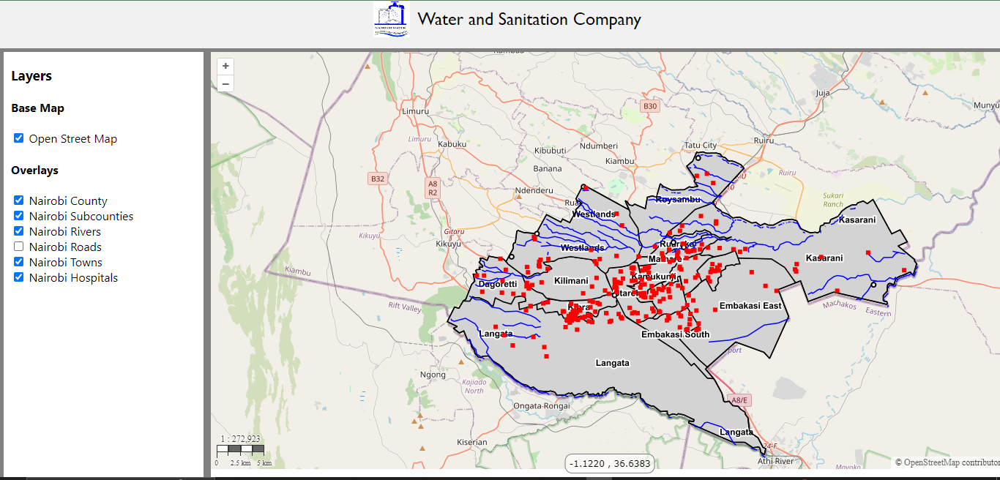

This report details the development of a simple infrastructure for a Water and Sanitation Company within a Nairobi county. The project aims to create an integrated system that leverages spatial data to manage the company's operations effectively. This involves setting up a Spatial Data Infrastructure (SDI) using various tools, including pgAdmin for database management, QGIS for geographic information system (GIS) visualization, GeoServer for map serving, and web technologies (HTML, CSS, JavaScript) to build a web-based GIS interface. Each phase of the project is described in detail, highlighting the steps taken, challenges faced, and outcomes achieved.
The project required several datasets to comprehensively represent the county's geographic and infrastructure details. These datasets include:
These datasets form the backbone of the spatial database and are critical for the functionality of the Water and Sanitation Company's GIS infrastructure.
The database setup was carried out using PostgreSQL, a popular database management tool. The first step was to create a new database named SDI. Within this database, a schema called Nairobi was established to organize the data efficiently.
The Nairobi schema includes various tables representing counties, hospitals, towns, roads, and rivers. These tables are interconnected to reflect real-world relationships, enabling comprehensive data analysis and visualization. For example, the roads table is linked to the towns and counties tables, facilitating route analysis and infrastructure planning.
With the database in place, the next step was to configure QGIS to visualize the spatial data stored in the PostGIS database. The connection process involved opening QGIS and adding PostGIS layers by entering the database connection details and testing the connection to ensure accuracy.
Once connected, the vector layers representing counties, hospitals, towns, roads, and rivers were loaded into QGIS. This setup allows the Water and Sanitation Company's staff to view and analyze the spatial data, making it easier to plan and manage infrastructure projects.


Permissions were configured to ensure that different departments within the company had access to the specific data they needed. For example, the engineering department could access road and river data, while the health department could view hospital and town data. This granular level of control enhances data security and ensures efficient data management.
GeoServer was used to serve the maps and make the spatial data accessible via web services. The first task was to set up access rights for different departments. Each department's head was assigned specific permissions based on their role and data requirements.
The configuration process involved creating user roles in GeoServer and assigning appropriate access levels to each role. For instance, the mapping department was granted full access to all datasets, while other departments had restricted access based on their needs.


Once the access rights were configured, the next step was to establish a connection between GeoServer and the webGIS interface. This connection allows GeoServer to serve maps that can be integrated into the web-based GIS application, enabling real-time data visualization and analysis.
The final phase of the project involved integrating the spatial data into a web-based GIS application. This was achieved using HTML, CSS, and JavaScript to build a user-friendly interface that displays the organization's data.
GeoServer was connected to the webGIS application to serve maps, providing an interactive platform for viewing and analyzing spatial data. The application allows users to interact with the maps, query data, and generate reports based on their needs.

This project successfully developed a simple infrastructure for a Water and Sanitation Company using a combination of database management, GIS visualization, map serving, and web technologies. The project involved setting up a database, configuring QGIS, assigning access rights in GeoServer, and integrating the data into a webGIS.
The resulting infrastructure provides a robust platform for managing the company's spatial data, enabling efficient planning, analysis, and decision-making. Future work could involve expanding the dataset, enhancing the webGIS interface, and integrating additional functionalities to further support the company's operations.